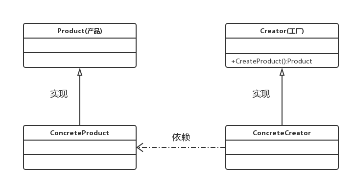

工厂模式
定义：为创建对象提供过渡接口，以便将创建对象的具体过程屏蔽隔离起来，提高了项目的灵活性
场景：
- 当一个对象拥有很多子类，那么创建该对象的子类使用工厂模式是最合适的，不但可以面向接口的编程，还为维护以及开发带来方便。
- 当创建某个对象时需要进行许多额外的操作，如在单例对象初始化时查询数据库然后将查询到的值赋予要创建的对象,或是需要许多额外的赋值等情况。
工厂模式分类
- 工厂方法模式:每个具体工厂类只能创建一个具体产品类的实例
- 抽象工厂模式:每个具体工厂类可以创建多个具体产品类的实例
本篇博客只介绍工厂方法模式，抽象工厂模式将在下一片博文中学习。
工厂方法模式
工厂方法模式又称为工厂模式，也叫虚拟构造器模式或者多态工厂模式，在工厂方法模式中，父类负责定义创建对象的公共接口，而子类则负责生成具体的对象，这样做的目的是将类的实例化操作延迟到子类中完成，即由子类来决定究竟应该实例化哪一个类。
工厂方式法模式，定义了一个用于创建对象的接口，让子类决定实例化哪一个类。所以工厂方法使一个类的实例化延迟到子类。
工厂方法模式结构
工厂方法模式包含４种角色：
- 抽象产品角色(Product)：定义产品的接口
- 具体产品角色(ConcreteProduct)：实现接口Product的具体产品类
- 抽象工厂角色(Creator)：声明工厂方法，返回一个产品
- 具体工厂(ConcreteCreator)：实现工厂方法，由客户调用，返回一个产品的实例
工厂方法模式结构的类图如下所示：

进一步了解工厂方法模式
优点：
- 在系统中加入新产品时，无须修改抽象工厂和抽象产品提供的接口，也无须修改其他的具体工厂和具体产品，而只要添加一个具体工厂和具体产品就可以了。这样，系统的可扩展性也就变得非常好，完全符合“开闭原则”。
- 基于工厂角色和产品角色的多态性设计是工厂方法模式的关键。它能够使工厂可以自主确定创建何种产品对象，而如何创建这个对象的细节则完全封装在具体工厂内部。工厂方法模式之所以又被称为多态工厂模式，是因为所有的具体工厂类都具有同一抽象父类。
缺点：
- 在添加新产品时，需要编写新的具体产品类，而且还要提供与之对应的具体工厂类，系统中类的个数将成对增加，在一定程度上增加了系统的复杂度，有更多的类需要编译和运行，会给系统带来一些额外的开销。
代码实例
代码演示的内容：工厂方法模式模拟奥迪车的生产过程
抽象产品角色(Product)：
|
|
具体产品角色(ConcreteProduct):
|
|
抽象工厂角色(Creator)：
具体工厂(ConcreteCreator)：
客户调用：
|
|
输出：
制造–>AudiA4L
制造–>AudiA6L